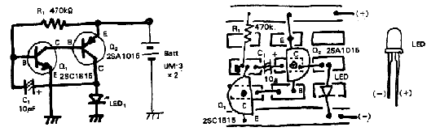

|
|
LED（発光ダイオード）を間欠的にピカッ、ピカッと光らせる回路です。
用途はいろいろと考えられると思います。ぜひ皆さんで考えて見て下さい。
回路図、実体配線図を第１、２図に示します。
|  |
| 第１図 ピカッピカッ回路図 第２図 実体配線図 |
R1を22kΩと1MΩのボリュームのシリーズに接続したものと交換すれば発光周期を可変することが出来ます。（発光式メトロノーム）
また、上記1MΩのボリュームの代わりにCdSをいれると明るさによって発光周期が変化します。
(1)#018に「弛張発振器」という回路があります。
(2)#063に「ホタルモドキ」という回路があります。